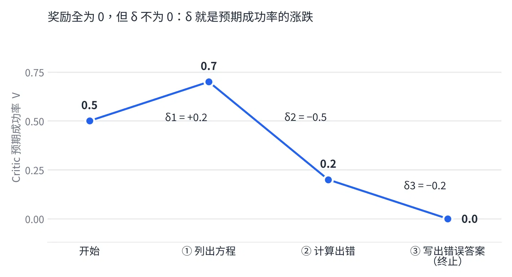

第 1 篇：Actor-Critic 与 GAE——从采样回报到优势估计
学习主线：最终分数太粗 → 让 Critic 学一条"预期分数曲线" → 曲线的每一步涨跌（TD 误差）就是一步的评价 → 把后面各步的涨跌按 λ 折扣累加，得到 GAE → 交给 TRPO / PPO 去更新策略。
阅读指南
全篇只用一个三步数学题的故事：每一节的数字都来自它，所以你可以一路用同一组数字验算。先不引入参考模型、KL 惩罚和 PPO 裁剪。建议分三次阅读：
- 第 0–3 节：用故事理解 Critic、优势和 TD(Temporal Difference，时序差分)误差。读完你应该能回答"δ 是什么"。
- 第 4–6 节：理解 MC 与 TD 的取舍，掌握 GAE 与 λ，并完成手算。
- 第 7–10 节：串起训练流程，检查工程细节和常见误解，做自测题。
学完后，你应该能解释：Critic 的训练标签从哪里来；TD 误差为什么能用于更新策略；λ 调节什么；为什么有了 GAE 仍然需要 TRPO / PPO。
符号约定
| 符号 | 含义 |
|---|---|
| \(s_t,a_t,r_t\) | 第 t 步动作前的状态、执行的动作、执行后获得的奖励 |
| \(s_{t+1}\) | 执行动作后的下一状态 |
| \(\pi_\theta\) | Actor：参数为 θ 的策略 |
| \(V^\pi,Q^\pi,A^\pi\) | 某个固定策略 π 的真实状态价值、动作价值、优势 |
| \(V_\phi\) | Critic：参数为 φ 的状态价值近似 |
| \(\hat A_t\) | 用数据与价值预测构造的优势估计 |
| \(\gamma\) | 奖励折扣因子 |
| \(\lambda\) | GAE 中控制不同估计长度权重的参数 |
| \(T\) | 本条完整轨迹的最后一个动作位置 |
数值例子采用有限回合、γ = 1；通用公式保留 γ。终止状态没有未来奖励，因此其价值为零。除特别说明外，数据由本轮当前策略采集，价值预测在构造本轮目标时固定。
0. 先看一个故事
想象一道三步数学题，Actor 要一步步解出来。Critic 像一张**"预期成功率表"**：每做完一步，就根据当前已经写出的内容，更新一次"我现在大概有多大把握做对"。
| 状态 | 预期成功率 \(V\) | 这一步的涨跌 \(\delta\) |
|---|---|---|
| 开始 | 0.5 | — |
| ① 列出方程 | 0.7 | \(+0.2\) |
| ② 计算出错 | 0.2 | \(-0.5\) |
| ③ 写出错误答案（终止） | 0 | \(-0.2\) |
最终答错了，所以整个过程中的奖励全是 0。但 δ 并不是 0。δ 衡量的是：**这一步让前景变好，还是变坏。**这个故事就是本篇的全部直觉：

- Critic 学的是这条预期分数曲线。
- 曲线上相邻两点的差，是对一步动作的评价（TD 误差，第 3 节）。
- 把后面各步的涨跌，按 λ 折扣累加到这一步头上，就是 GAE（第 5 节）。
后面各节都是把这几句话讲清楚、算清楚。
1. 从 REINFORCE 继续
上一篇最后，我们已经得到带状态 baseline 的更新信号：
在 γ = 1 的有限回合设置下，策略梯度估计写成：
对语言模型，这里有一个关键特点：奖励常常只在最后一个 token 之后才给出（例如整条回答才有一个评分）。此时，除最后一步外所有 \(r_k=0\)，完整回报对每个位置都是同一个数：
也就是说，一条回答里"列对方程"和"算错数"的 token 拿到的信号完全一样。这有两个后果：
- 信号很粗：分不出哪一步好、哪一步坏。
- 信号波动大：同一个前缀，后面随机采样出的结局不同，回报就大不同。
我们需要一个办法，让每一步都能得到不同的、更稳定的评价。Actor-Critic 的思路是：另外训练一个 Critic，学会预测"从这里继续下去，平均能得多少分"。有了这条预测曲线，我们就能：
- 用当前状态的预测作参照，判断"实际比预期好多少"；
- 用下一状态的预测，代替尚未观察到的遥远回报，少受后续随机性的影响。
Actor-Critic 引入一个价值预测器，分别帮助解决这两个问题：用当前状态价值作参照，用下一状态价值预测尚未观察到的回报。 这两种用法相关，但对偏差的影响不同。
1.1 一个统一视角：策略梯度的权重如何构造
前面从回报减去 baseline 出发，还可以进一步问：策略梯度前面的权重一定要这样计算吗？将它暂时记作 \(\psi_t\)，就能把不同方法放在同一个框架下理解。网页使用的是小写希腊字母 psi，即 \(\psi_t\)，这里沿用这个记号。它只是“本步更新权重”的统称，并不是另一个需要训练的网络。先保持本篇数值例子的约定：有限回合\(\gamma=1\)，数据由当前策略采集。此时可以把策略更新写成：
其中，logprob 梯度决定怎样调整参数以提高已采样动作的概率，\(\psi_t\) 则决定这个方向应当获得多大的正向或负向权重。REINFORCE、优势估计与一步 Actor-Critic 的联系，可以从“怎样选择这个权重”来理解。
下面的对照保留折扣回报的定义，便于与后文连接；关于折扣目标的外层权重，见本节末尾说明。
| 权重的构造 | 表达式 | 直觉与条件 |
|---|---|---|
| 整条轨迹的回报 | \(\psi_t=G_1\) | 每一步共享最终整体表现；在此处无折扣目标下可用，但混入了当前动作无法影响的过去奖励 |
| 从本步开始的回报 | \(\psi_t=G_t\) | 去掉过去奖励，只根据当前动作之后的结果更新 |
| 回报减去状态基准 | \(\psi_t=G_t-b(s_t)\) | 比较本次结果与参照，合适的基准可降低梯度方差 |
| 动作价值 | \(\psi_t=Q^\pi(s_t,a_t)\) | 用采取该动作后的期望回报代替单次结局；实际需要学习近似值 |
| 优势 | \(\psi_t=A^\pi(s_t,a_t)\) | 在动作价值上减去状态平均价值，评价该动作相对通常水平的好坏 |
| 一步 TD 残差 | \(\psi_t=\delta_t\) | 根据本步奖励与下一状态价值构造局部信号；依赖价值预测的准确性 |
这几行不是六个可以任意互换的数字。它们成立的依据各不相同：去掉过去奖励利用的是当前动作不能影响过去；减去状态 baseline 利用的是它不依赖当前动作；用真实动作价值替代采样回报利用的是条件期望。价值与优势的定义将在第 2 节展开。
尤其要区分真实函数与学习到的近似。表中的 \(Q^\pi\)、\(A^\pi\) 是理想的真实量；训练中使用 \(Q_\phi\) 或 \(V_\phi\) 时，误差可能改变梯度估计。对 TD 残差，也只有在价值准确且终止处理正确时，其给定状态、动作的条件期望才等于真实优势；单次残差不等于真实优势。这一点将在第 3 节推导。
1.2 把这个统一视角接到 GAE
回到三步数学题：使用最终回报时，三个位置共享同一个结局；使用状态 baseline 后，即使最终回报相同，各位置的权重也可以不同。再进一步使用 TD 残差，权重开始依赖相邻状态之间的价值变化。
因此，前文“各位置拿到的信号相同”准确地说是原始回报相同，并不意味着减去不同状态 baseline 后的优势估计仍相同。
本篇后面的内容，就是逐步构造这个权重：
这是一条理解路线，不意味着越往右越无条件更好。每一步都在改变“实际采样结果”和“价值预测”所占的比例。GAE 同样可以放进统一框架中：取 \(\psi_t=\hat A_t^{\mathrm{GAE}}\)，并在 Actor loss 中把它作为停止梯度的权重：
这样，第 2 节解释权重里的价值和优势，第 3 节解释 TD 残差，第 4–5 节则说明为什么要混合不同长度的信息。
**折扣约定：**以上统一梯度与 loss 的直接写法采用 \(\gamma=1\)。若严格优化起点折扣目标 \(J_\gamma=\mathbb E[\sum_t\gamma^{t-1}r_t]\)，使用未来回报、动作价值、优势或 TD 类权重时，完整回合采样公式还需外层 \(\gamma^{t-1}\)。若使用整条折扣回报 \(G_1\) 加权整条轨迹的 logprob 梯度，则已经从原目标直接求导，不再额外乘这层权重。不同采样分布约定下的公式不能机械混用。
本节的统一视角参考《动手学强化学习》：Actor-Critic 算法，第 10.2 节，并结合本篇的有限回合约定补充了近似误差、折扣目标及 GAE 的衔接说明。
2. Actor 和 Critic 的各自输出
2.1 Actor 与 Critic 的分工
Actor 就是已有的策略模型：输入状态，输出动作概率分布。Critic 则输入状态，输出一个标量，预测从这里按照当前策略继续行动的平均回报：
回到故事：
| 前缀状态 | Critic 的预测 | 在最终奖励为 0/1、\(\gamma=1\) 时的解释 |
|---|---|---|
| 已建立正确方程 | 0.7 | 预计按当前策略继续，约有 70% 的概率成功 |
| 已出现关键逻辑错误 | 0.2 | 预计按当前策略继续，约有 20% 的概率成功 |
这种成功率解释仅适用于二元最终奖励；一般的价值可能为负，也可能大于 1。
Critic 预测的是当前策略的表现，不是从这个状态出发理论上能达到的最好结果。即使前缀正确，如果当前 Actor 不会继续解题，价值也可能很低。
flowchart LR
S[当前状态：问题与前缀] --> A[Actor：输出 token 分布]
S --> V[Critic：预测未来回报]
A --> E[采样 token，获得下一状态与奖励]
E --> H[结合价值预测计算优势]
V --> H
H --> U[更新 Actor]
E --> Y[构造回报目标]
Y --> C[训练 Critic]
Actor 与 Critic 可以是两个网络，也可以共享主干、分别连接策略头和价值头。它们是两种职责，不一定对应两份完全独立的模型。
2.2 Critic 怎么学？先看最直接的办法
用当前策略采样完整回答，拿到最终评分后，可以算出每个位置的 \(G_t\)。让价值网络去拟合它：
例如同一个前缀之后，一次回答成功（目标 1），另一次失败（目标 0）。在大量相关样本上做平方误差拟合，网络会趋向预测条件平均回报，而不是每次都预言最终结果。
自然语言前缀很少完全重复，价值网络需要借助参数共享，在相似状态之间泛化；这也意味着它可能预测错误。后面第 3 节会给出另一种不必等到最后的标签。
2.3 优势：比"平均水平"好多少
状态价值回答"在这里通常能表现多好"；动作价值回答"在这里先做这个动作，再按当前策略继续，能表现多好"：
两者之差就是优势：
一个小例子：某状态下，Actor 以 0.75 的概率选 A，以 0.25 的概率选 B，两者真实动作价值分别为 1 和 0。那么：
优势衡量的是相对当前策略平均水平的好坏，所以同一状态下按当前策略对真实优势求平均，结果为零：
实际训练不知道真实的 \(Q\) 和 \(V\)，只能使用估计。某一条样本的优势为正，表示这条样本给出了提高对应动作概率的信号，不代表已经证明这个动作在所有后续结果下都更好。
进阶：学到 baseline 后，是否已经离开 REINFORCE？
如果仍然使用：
那么仍然保留了蒙特卡洛回报。常见教材将其称为"带学习 baseline 的 REINFORCE"；有些实践也宽泛地称为 Actor-Critic。更值得检查的是：是否用价值预测替代了尚未观察到的回报，即是否进行了自举。
如果 baseline 是采样前固定、仅依赖状态的函数，且在策略 loss 中停止梯度，那么即使它不准确，减去它也不改变期望策略梯度；它可能改善或恶化方差。若先用同一批动作结果拟合 baseline 再回算权重，则要额外考虑这种样本依赖，不能直接照搬独立 baseline 的无偏证明。
3. 自举与 TD：一步的"涨跌"
3.1 不等到最后，也能构造目标
完整回报满足递推式：
如果还没有完整的 \(G_{t+1}\)，就用 Critic 的预测代替：
“用已有估计构造新的学习目标”称为 bootstrapping，自举。终止时下一状态价值置零。
训练 Critic 时，让当前预测接近这个目标：
目标分支停止梯度，这称为半梯度 TD 更新。Critic 起初可能很差，但真实奖励提供锚点，更新逐步传播价值信息；使用神经网络时并不因此获得无条件收敛保证。
3.2 TD 误差为何能估计优势？
定义 TD 误差：
理解：**经历这一步后的“实际奖励 + 剩余预测”，比行动前的预期好多少？**如果 Critic 恰好准确，即 \(V_\phi=V^\pi\)，那么：
因此，一步 TD 误差可以作为优势的采样估计。单次 δ 不等于真实优势；Critic 不准确时，还可能带来偏差。
用故事算一遍（\(\gamma=1\)，各步奖励为 0）：
奖励全为 0 时，\(\delta_t=V(s_{t+1})-V(s_t)\)，正好是价值曲线的相邻差(见0节中的曲线图)。这是理解 TD 误差最直观的方式。
3.3 为什么 δ 能当作优势？
如果 Critic 恰好准确，即 \(V_\phi=V^\pi\)，那么：
因此，一步 TD 误差可以作为优势的采样估计。注意：单次 \(\delta\) 不等于真实优势；Critic 不准确时，还会带来偏差。
3.4 Actor 怎样更新？
在 γ = 1 的设置中，最基础的一步 Actor-Critic 使用：
δ 为正时提高对应动作概率，为负时降低。Critic 的预测参与形成权重，但 Actor loss 不应通过该权重反向传播。
在故事里：步骤 ① 的 δ 为正，"列出方程"的概率被提高；步骤 ② 的 δ 为负，"算错"的概率被降低。在奖励全为 0 的情况下，信号完全来自 Critic 预测的变化。
对严格的起点折扣目标 \(J=\mathbb E[\sum_t\gamma^{t-1}r_t]\)，逐步策略梯度还带有外层 \(\gamma^{t-1}\)。采用折扣状态分布时可有不同写法。本篇实际训练示例固定 γ = 1，避免混用目标约定。
4. 一步 TD 与完整回报，各自牺牲了什么？
两种优势估计：
| 优势估计 | 公式 | 依赖的主要信息 | 主要取舍 |
|---|---|---|---|
| 蒙特卡洛 | \(G_t-V_\phi(s_t)\) | 直到终止的采样奖励 | 少依赖未来价值预测，但受长程采样波动影响 |
| 一步 TD | \(r_t+\gamma V_\phi(s_{t+1})-V_\phi(s_t)\) | 一步奖励与下一状态预测 | 通常波动较小，但依赖 Critic 准确性 |
这里的方差趋势不是对所有任务的严格排序。降低方差也不等于改善每一批数据的表现。
4.1 一个可以手算的对比
前缀 \(s\) 的预期成功率是 0.5。动作 A 把回答带到一个真实成功率为 0.8 的状态，所以 A 的真实优势是 \(0.8-0.5=0.3\)。
| 估计方式 | 每次得到的值 | 平均 | 方差 |
|---|---|---|---|
| 蒙特卡洛 | 成功 \(+0.5\)（概率 80%）／失败 \(-0.5\)（概率 20%） | 0.3 | 0.16 |
| TD，Critic 准确 | 恒为 \(0.3\) | 0.3 | 0 |
| TD，Critic 把下一状态错估为 0.5 | 恒为 \(0\) | 0 | 0 |
说明：
- MC 平均下来是对的（无偏），但每次摆动很大，需要很多样本才能平均出 0.3。
- TD 很稳，但依赖 Critic。Critic 准确时又稳又对；Critic 错了，它会稳定地错。第三行里，Actor 永远收不到"A 比平均好"的信号。
这就是"偏差—方差取舍"的具体含义。方差趋势不是对所有任务的严格排序，降低方差也不等于改善每一批数据的表现。
4.2 一个容易忽略的区别：两种误差，一种能抵消，一种不能
- baseline 的误差：MC 优势中的当前状态 baseline 不准，会让单次权重偏离真实优势，但只要 baseline 满足第 2 节进阶框里的条件，这个误差在策略梯度的期望中会抵消。
- 自举的误差：TD 用到的下一状态预测误差，通常依赖当前动作，不能同样抵消，所以会造成真正的偏差。
自然的问题是：能不能先看两步、五步，再用预测补上剩余部分？这就是 GAE 要解决的。
5. GAE：把后面各步的涨跌累加起来
5.1 一个递推式
GAE（Generalized Advantage Estimation，广义优势估计） 的核心可以用一句话说清：每一步的优势 = 这一步的涨跌 \(\delta_t\) + 后面各步的优势，按 \(\gamma\lambda\) 打折。
写成递推式（从回答末尾向前算）：
展开后就是指数加权的 TD 误差之和：
GAE 是构造策略更新权重的方法，本身不规定如何约束策略步长。原始工作将指数加权 TD 残差与信赖域优化结合使用。GAE 原始论文
5.2 λ 的意义
λ 决定"你有多相信后面发生的事该算到这一步头上"。用故事里的第 1 步（列出方程）来看：
| λ | 第 1 步的优势 | 含义 |
|---|---|---|
| 0 | \(+0.2\) | 只看这一步，认为列方程是好的 |
| 0.8 | \(-0.328\) | 后面的错误按折扣传回来 |
| 1 | \(-0.5\) | 整条回答的结局减去最初预期 |
三种情形分别是：
λ = 0：一步 TD。 \(\hat A_t=\delta_t\)。仅使用本步 TD 误差，更多依赖下一状态价值预测。
λ = 1：沿完整轨迹抵消成蒙特卡洛形式。
这个结论要求确实到达终止、终止价值为零。如果只是采样片段结束，还会留下片段末端的自举价值，并非纯蒙特卡洛回报。
0 < λ < 1：在不同长度之间折中。 λ 较小通常更依赖价值预测、方差较低；λ 较大通常更依赖采样回报、方差较高。价值误差、奖励结构与数据量都会影响实际结果，不存在适用于所有任务的最佳 λ。
γ 与 λ 的职责不同：γ 决定未来奖励在回报中的权重；λ 在给定回报定义下调节优势估计的长度混合。γ 也会影响方差，但不能把二者当成同一个参数。
5.3 为什么是这个形式？
▸ 进阶：从 n 步回报推导到 GAE
n 步估计。 定义 n 步回报与相应优势估计：
到达终止状态时，尾部价值为零。n 小时较早使用 Critic；n 大时更多依赖实际采样。
把连续 TD 误差相加，中间的价值项会抵消：
一般地：
混合多个长度。 设当前位置距离终止还有 \(H=T-t+1\) 个动作，构造加权平均：
最后一项接收剩余权重，因此全部权重之和为 1。把 n 步优势展开后，\(\delta_t\) 出现在全部估计中，权重为 1；\(\gamma\delta_{t+1}\) 出现在长度至少为 2 的估计中，权重为 \(\lambda\)；后面依此类推。合并后得到 5.1 节的指数加权求和式。
6. 完整手算：一条最终失败的回答
假设某条回答抽象为三个生成步骤，最终奖励为 0。Critic 在各前缀上的固定预测为：
| t | \(r_t\) | \(V(s_t)\) | \(V(s_{t+1})\) |
|---|---|---|---|
| 1 | 0 | 0.5 | 0.7 |
| 2 | 0 | 0.7 | 0.2 |
| 3 | 0 | 0.2 | 0（终止） |
取 γ = 1，则：
第一步使预测前景变好，第二步使其显著变差，最后的失败又低于第三步前的预期。
取 λ = 0.8。最方便的计算方式是从后向前递推：
所以：
对比三种 λ：
| 位置 | λ = 0 | λ = 0.8 | λ = 1 |
|---|---|---|---|
| 1 | +0.2 | −0.328 | −0.5 |
| 2 | −0.5 | −0.66 | −0.7 |
| 3 | −0.2 | −0.2 | −0.2 |
这个例子揭示了一个重要限制：GAE 不会保证"正确的中间步骤一定获得正优势"。 第一步虽然改善了预测前景，但更后面的负面信息传回来后，其 GAE 仍为负（λ = 0.8、1 时）。
优势估计是统计学习信号，不是对某个 token 的因果判决。Critic 也可能误判前景；最终评分不能凭空提供精确的逐步标准答案。
6.2 Critic 的训练目标：λ 回报
Critic 需要一个固定的目标。常见做法是：
本例得到 \([0.172,\ 0.04,\ 0]\)。它们不同于真实采样回报 \([0,0,0]\)，因为 \(\lambda<1\) 时混入了自举预测。\(\lambda=1\) 且完整终止时，才恢复为采样回报；\(\lambda=0\) 时则是一步 TD 目标 \(r_t+\gamma V_{\rm old}(s_{t+1})\)。
7. 一轮 Actor-Critic + GAE 训练怎么串起来？
下面采用完整终止轨迹、γ = 1、Actor 与 Critic 参数分离，并且每批数据只更新 Actor 一次。伪代码刻意保留各个概念对应的位置。
# 1. 用当前 Actor 采集若干完整轨迹；奖励来自环境或评分规则
trajectories = collect_complete_episodes(actor)
# 2. 在更新之前固定本批价值预测，构造 GAE 与价值目标
with no_grad():
for traj in trajectories:
# states[t] 是执行 actions[t] 之前的状态
values = critic(traj.states) # 长度 T
next_values = concat(values[1:], [0.0]) # 最后一步真实终止
deltas = traj.rewards + next_values - values
advantage_next = 0.0
advantages = zeros_like(values)
for t in reversed(range(len(values))):
advantage_next = deltas[t] + lam * advantage_next
advantages[t] = advantage_next
traj.advantages = advantages
traj.value_targets = advantages + values
# 3. logprob 必须保留对 Actor 的梯度；优势作为固定权重
actor_loss = mean([
-(actor.logprob(traj.states, traj.actions) * traj.advantages).sum()
for traj in trajectories
])
actor_optimizer.zero_grad()
actor_loss.backward()
actor_optimizer.step()
# 4. Critic 拟合固定目标；此处对所有有效状态求均方误差
critic_loss = 0.5 * mean_over_valid_states([
(critic(traj.states) - traj.value_targets) ** 2
for traj in trajectories
])
critic_optimizer.zero_grad()
critic_loss.backward()
critic_optimizer.step()
几点说明：
- 这里先对每条轨迹的 Actor 项求和，再对轨迹平均，与第 0 篇的有限回合目标一致。若改成每条回答先除以自己的长度，会改变不同长度回答的训练权重。
- Critic 使用的是固定的、未标准化的优势加旧价值构成的目标。若为了策略优化对优势做标准化，应保存原始优势供价值目标使用；不能把标准化后的优势直接加回价值。
- 实际 LLM 批处理还需要 mask：prompt 不是本例的动作，padding 不是真实状态；真实 EOS 动作通常需要计入。价值位置必须与"生成这个 token 之前的前缀"对齐，不能错一位。
8. 真正终止与采样截断，为什么要分开？
到达真正终止状态，未来回报为零。但若任务本来还会继续，只是采样器收集到固定长度就暂停，未来回报并不为零，应保留最后状态的价值预测。
通用实现可以区分两个 mask：
- \(b_t\)：是否允许自举。真正终止时为 0，单纯采样截断通常为 1。
- \(c_t\)：本批数据中是否还有同一轨迹的下一条 TD 残差可接续。终止或片段边界为 0，正常连续位置为 1。
截断时，δ 中可保留下一状态预测，但不能把下一回合的优势串进来。使用自动重置环境时，要取得重置前的最终观察，而不是拿新回合初始状态自举。
对于 LLM 的最大生成长度，必须看任务定义：如果长度上限就是任务结束，并据此结算奖励，可以按终止处理；如果只是暂停一段本可继续的生成，就属于截断。不能只凭“停止生成”判断。
9. 与之前的分类，以及 TRPO / PPO 的关系
Actor-Critic 是一种职责分工，不是 on-policy 的同义词。本文学习的是使用当前策略轨迹的 on-policy 状态价值 Critic；DDPG、TD3、SAC 等 off-policy 方法也属于 Actor-Critic 家族，但通常学习动作价值，训练目标与数据处理不同，不能直接套用本文全部公式。
同样，GAE 不是“让任何旧数据都能直接使用”的方法。这里的推导默认后续行为来自要评估的策略。策略更新后，不能把旧数据无限重复当成当前策略样本。
| 组成部分 | 解决的问题 |
|---|---|
| REINFORCE / 策略梯度 | 如何从采样回报形成策略参数的更新方向？ |
| Critic | 各状态未来的平均回报大约是多少？ |
| GAE | 用怎样的优势估计给策略梯度加权？ |
| TRPO | 在限制策略分布变化的条件下，怎样执行更新？ |
| PPO | 怎样用较易实现的目标控制策略更新？ |
因此，GAE 与 TRPO / PPO 可以组合：GAE 生成权重，策略优化算法决定如何用权重更新参数。 GAE 本身不限制 KL 散度，也不保证真实回报单调提高。
10. 常见误解
| 说法 | 更准确的理解 |
|---|---|
| Critic 就是奖励模型 | 奖励模型给行为或结果打分；Critic 预测按当前策略继续的累计回报 |
| 有 Critic 就不需要真实奖励 | Critic 仍需奖励提供训练依据，自举只是补全未观察的未来 |
| TD 误差等于真实优势 | 价值准确时，TD 误差的条件期望等于优势；单次样本仍可能有噪声 |
| baseline 预测错一定让策略梯度有偏 | 固定的状态 baseline 与未来价值自举要区分，前者可在期望梯度中抵消 |
| λ 越小越好 | 可能减少采样波动，但更加依赖 Critic 的准确性 |
| λ = 1 总是纯蒙特卡洛 | 完整终止轨迹才成立；截断片段仍可留下自举尾项 |
| GAE 找出了每个 token 的真实功劳 | 它提供优势估计，无法自动补足奖励中没有的过程信息 |
| Actor-Critic 必然是 on-policy | 两类都有，取决于具体算法 |
一页速查
本篇闭环：采样回报波动大 → 学习预期回报 → 以 TD 误差评价一步变化 → 混合多步误差形成 GAE → 把优势交给策略优化器。
延伸阅读
- Schulman 等：High-Dimensional Continuous Control Using Generalized Advantage Estimation：GAE 的原始工作。建议先完成手算，再读其优势估计推导。
- Sutton 与 Barto，《Reinforcement Learning: An Introduction》，分别用于补充 TD、自举与资格迹、策略梯度及 Actor-Critic 的背景。